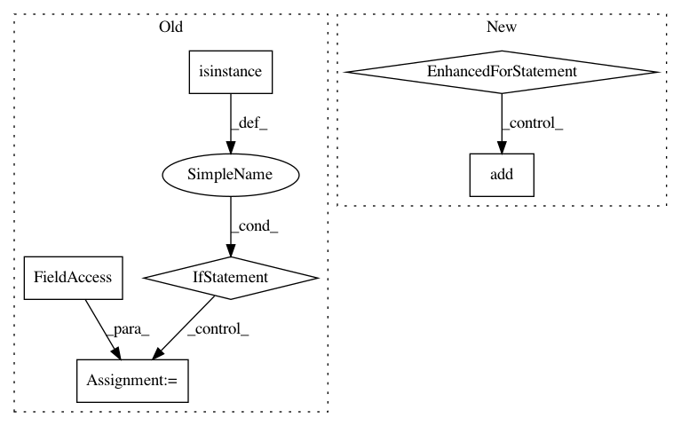

c93bab32fa8c3f6fc72c83e6d87917b29b4e017f,src/python/pants/backend/jvm/tasks/jvm_dependency_check.py,JvmDependencyCheck,targets_by_file,#JvmDependencyCheck#,99
Before Change
if isinstance(target, JvmTarget):
for src in target.sources_relative_to_buildroot():
targets_by_file[os.path.join(buildroot, src)].add(target)
elif isinstance(target, JarLibrary):
for jardep in target.jar_dependencies:
jarlibs_by_id[(jardep.org, jardep.name)].add(target)
// TODO(Tejal Desai): pantsbuild/pants/65: Remove java_sources attribute for ScalaLibrary
if isinstance(target, ScalaLibrary):
for java_source in target.java_sources:
for src in java_source.sources_relative_to_buildroot():
targets_by_file[os.path.join(buildroot, src)].add(target)
After Change
// Compute jar -> target.
self.context.log.debug("Mapping jars...")
compile_classpath = self.context.products.get_data("compile_classpath")
for jar_lib in self.context.targets(lambda t: isinstance(t, JarLibrary)):
for _, artifact_path in compile_classpath.get_for_target(jar_lib, transitive=False):
targets_by_file[artifact_path].add(jar_lib)
return targets_by_file
def _compute_transitive_deps_by_target(self):
Map from target to all the targets it depends on, transitively.
In pattern: SUPERPATTERN
Frequency: 3
Non-data size: 6
Instances
Project Name: pantsbuild/pants
Commit Name: c93bab32fa8c3f6fc72c83e6d87917b29b4e017f
Time: 2015-08-31
Author: pl@foursquare.com
File Name: src/python/pants/backend/jvm/tasks/jvm_dependency_check.py
Class Name: JvmDependencyCheck
Method Name: targets_by_file
Project Name: leonsim/simhash
Commit Name: 6e8898b82f4591fe2256ca56be3c98836fe94b88
Time: 2017-10-31
Author: akellne@users.noreply.github.com
File Name: simhash/__init__.py
Class Name: Simhash
Method Name: __init__
Project Name: Rostlab/nalaf
Commit Name: 2887b2a463a9a425bd6b69281500f48621254a01
Time: 2017-01-03
Author: i@juanmi.rocks
File Name: nalaf/features/relations/new/dependency.py
Class Name: DependencyFeatureGenerator
Method Name: add_all